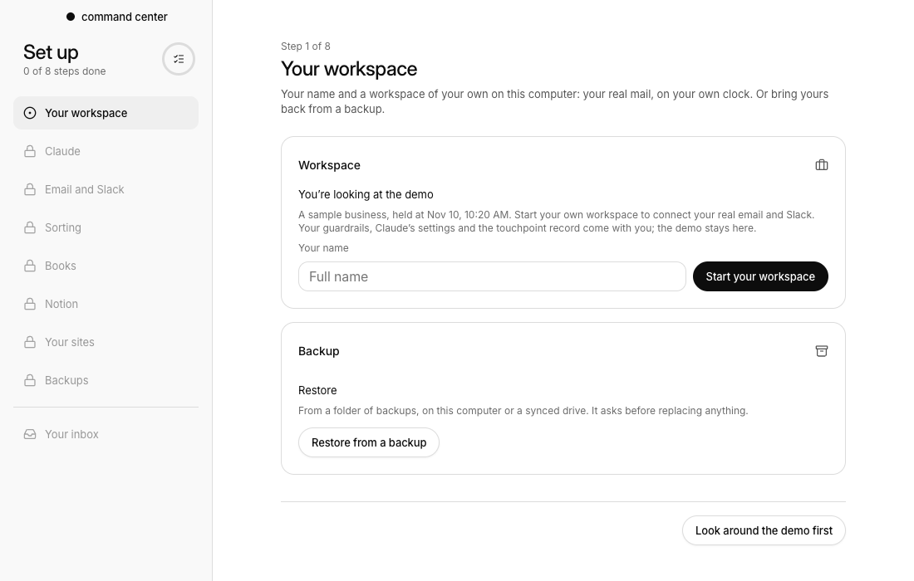
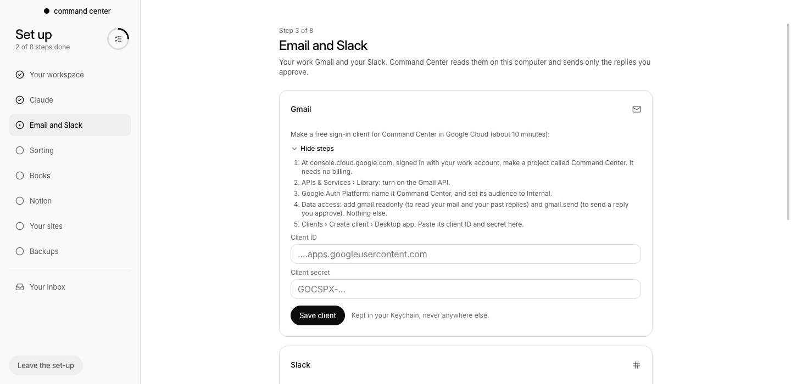
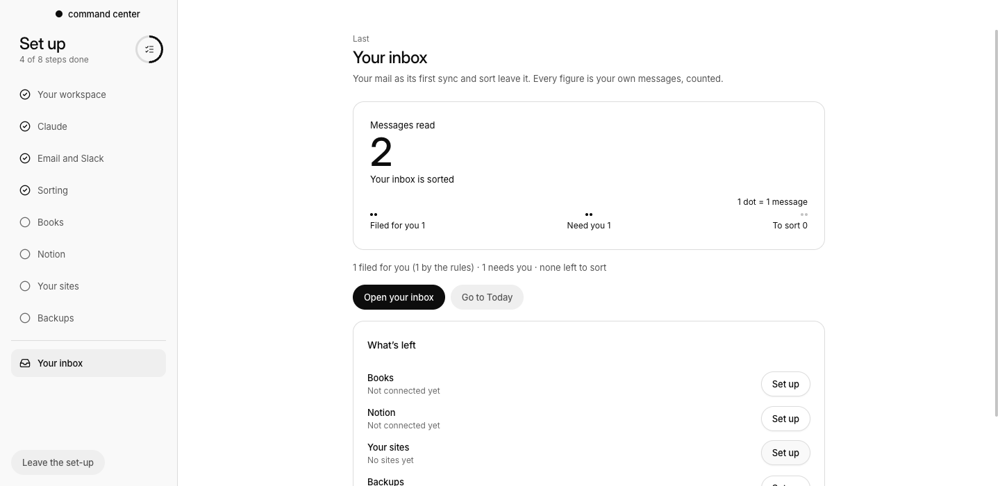

Install and set up
Download the app, open it once past your computer's check for unsigned apps, and the set-up walks you through the rest, one step at a time.
Install
Mac (Apple silicon or Intel)
Open Command-Center-<version>-universal.dmg and drag Command Center into Applications.
- Open it once. macOS says it can't check the app, because the app isn't signed yet.
- Open System Settings › Privacy & Security, scroll to Command Center and choose Open Anyway.
- On macOS 14 or earlier you can instead right-click the app and choose Open.
You only do this once.
Windows 10 or 11 (x64 or Arm)
Run Command-Center-Setup-<version>.exe.
- If SmartScreen says it protected your PC, choose More info, then Run anyway.
- Follow the installer. It picks the x64 or Arm build for you.
Command Center starts with your computer and keeps running in the menu bar (Mac) or the notification area (Windows), so your briefs arrive with the window closed. Quit it from that icon's menu. You can turn Launch at login off in Settings › Touchpoints.
The set-up
The first time it opens, Command Center shows Set up instead of its usual screens: the steps on the left with how many are done, and one step at a time on the right, with Back, Skip for now and Next at the bottom.

Your workspace comes first. Every step after it can be skipped and done later, here or in Settings. Settings › Your workspace shows how far you got and has Open the set-up.
Rather look around first? Look around the demo first opens a sample business you can click through. It never sends anything, and its sidebar has Set up your workspace to bring you back.
1. Your workspace
Type your name and choose Start your workspace. This is where your real mail and work go, on your computer's own clock. Moving from another computer? Use Restore from a backup instead (see A new computer).
2. Claude
Choose how Claude is paid for: your API key (pay as you go) or your Claude plan (through Claude Code). Then set the Monthly cap, $50 to start. Details are in Claude, guardrails and costs.
3. Email and Slack
Command Center reads your work Gmail and your Slack on this computer, and sends only the replies you approve. Each uses an app you make yourself, for free: Gmail takes about 10 minutes, Slack about 5. The steps are in the app, and in Inbox: Gmail and Slack.

4. Sorting
Two switches: Claude sorts new mail and Claude drafts replies. Each asks first and tells you the most one call can cost. With both off, free rules still file the obvious.
5. Books
Connect QuickBooks (with your own Intuit app) and Stripe (a read-only restricted key). Invoices and reminders go out only on your click; moving money is always yours. See Money and the books.
6. Notion
If your clients and projects live in Notion, bring them in with a read-only connection, then retire Notion. See Bringing in Notion.
7. Your sites
For the site agent, add each website's GitHub repository with a fine-grained token for it. See Site agents.
8. Backups
Type a passphrase of at least 12 characters (four or more words) twice, keep it in your password manager, and choose Choose a folder and back up. iCloud Drive, OneDrive or a USB drive keeps your backups off this computer. See Backups.
Your inbox
The last page shows your mail as its first sync and sort leave it: how many messages were read, how many were filed for you, how many need you, and anything you skipped, each with Set up. Choose Open your inbox, and you're done.

Next: read Today and the agenda, the two screens you'll use most.